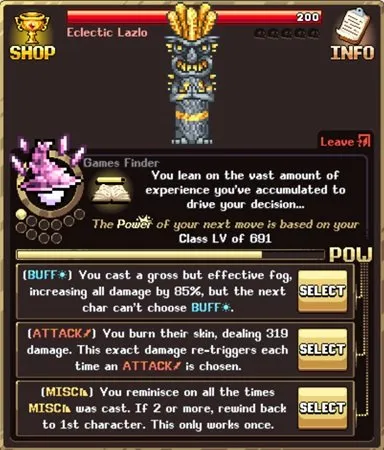
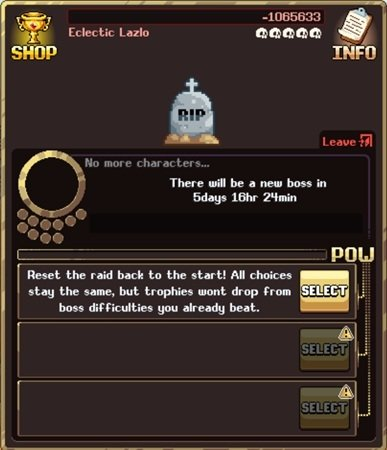
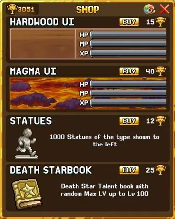
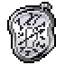
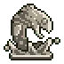
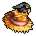

이 주간 보스 전투 가이드는 보스 공략법과 최고의 상점 구매 목록을 다룹니다. Yum-Yum Desert(World 2) 마을에서 접근할 수 있으며, 매주 다른 보스를 상대로 다양한 게임 요소에 따른 진행 상황을 기반으로 데미지를 줍니다.
보스 상점에는 고유 아이템, UI 코스메틱 보상, 그리고 일주일 동안 Idleon 계정 전체에 캐릭터 버프를 제공하는 기타 보너스가 있습니다. 매주 이 전투를 완료하고, 아래 소개된 커뮤니티 제작 스프레드시트를 활용하세요.

Weekly Boss 공략법
주간 보스 전투마다 최적의 공략 순서가 존재합니다. 이 순서는 보스에게 가하는 데미지를 극대화하고 5두개골 점수 달성 확률을 높입니다. 해당 주의 선택지에 따라 공격 리셋 극대화 또는 대규모 단일 공격 전 다양한 버프 활성화 등의 전략이 달라집니다.
주간 보스 공략의 최고 자료는 공식 Idleon 디스코드에서 제작된 이 Idleon 주간 보스 스프레드시트입니다. 제작자들에게 디스코드에서 감사를 전하는 것을 잊지 마세요.

이 스프레드시트는 주간 첫 보스 처치에 대한 5두개골 최적 순서를, 그리고 매일 반복해 추가 상점 트로피를 최대한 모을 수 있는 대안 순서를 제공합니다.
Weekly Battle 팁
다음 팁으로 World 2 보스 전투에서 얻을 수 있는 수익을 극대화하세요.
- 캐릭터 진행 균형 맞추기: 각 주간 전투에는 3가지 핵심 테마(위키 참조)가 있으며, 이것이 캐릭터가 입히는 데미지에 영향을 줍니다. 테마에는 스킬링 레벨, 핵심 스탯(HP/MP/Accuracy(명중률)/Defence(방어)/Movement Speed(이동 속도)), 클래스 레벨, 완료한 퀘스트 수, 그리고 Green Mushroom(W1), Crabcakes(W2), Rams(W3), Choccies(W4), Stiltmoles(W5)의 몬스터 처치 수가 포함됩니다. 이는 모든 계정 캐릭터의 균형 잡힌 진행을 장려합니다. 물론 시간이 지나면 자연스럽게 늘어나지만, 특정 주간 보스에서 어려움을 겪는다면 특정 캐릭터에 집중할 수 있습니다.
- 트로피 획득을 위해 매일 전투: 상점 보상을 최대화하려면 일일 시도를 모두 사용하여 보스를 처치하세요. 주간 시도 한 번만 하는 것보다 얻는 트로피가 훨씬 많아집니다.
- Golden Pocketwatch 쌓기: Golden Pocketwatch는 일일 초기화를 발동시키는 특별 아이템으로, 당일 보스 전투 시도도 포함합니다. 최적화를 위해 주간 보스 전투의 트로피 보상이 높을 때만 사용하세요. 그러면 Golden Pocketwatch를 쓸 때마다 더 많은 트로피를 얻어 더 많은 Golden Pocketwatch를 살 수 있습니다.

최고의 상점 구매 목록
아래는 전투 상점에서 트로피를 소비하는 권장 순서와 각 항목에 대한 설명입니다. 코스메틱 UI는 계정에 아무런 이점이 없으므로, 다른 UI 옵션이 필요하다면 맨 마지막에 구매하세요.
| 상점 보상 (트로피 비용) | 효과 | 비고 |
|---|---|---|
 Boss Battle Spillover Special Talent Book (25 트로피) Boss Battle Spillover Special Talent Book (25 트로피) |
이번 주 처치한 주간 보스 난이도(두개골)별 드롭률 증가 | 드롭률은 희귀 아이템에 중요한 스탯입니다. 이 구매는 해당 특수 탤런트를 최대 레벨 100까지 무작위로 올려줄 수 있습니다. 레벨 100 달성에 운이 필요하므로, 먼저 80+ 레벨을 목표로 하고 이후 아래 다른 구매들을 고려하다가 결국 레벨 100을 노리세요. |
| Gold Pocketwatch (30 트로피) | 일일 보너스 발동 및 초기화 | 가장 많이 구매하게 될 아이템으로, 일일 초기화를 발동시켜 계정 진행에 크게 기여합니다. 이벤트 기간에는 사용할 수 없습니다. |
 Silver Pocketwatch (2 트로피) |
일일 초기화 시간을 15분 앞당기거나 늦춥니다 | 실생활 일정에 맞게 일일 초기화 시간을 조정하고 싶은 경우 유용한 유틸리티 구매입니다. |
 1,000 Statues (12 트로피) |
표시된 유형의 석상 1,000개 획득 | 석상은 결국 파밍하기 쉬워지지만, World 2 초반에는 1,000개가 획득하기 어렵고 계정에 눈에 띄는 영향을 줄 수 있습니다. 각 석상 유형별로 한두 번만 구매해 데미지 및 스킬링 부스트를 받는 것을 권장합니다. |
| 25 Killroy Skulls (25 트로피) | Killroy에 해골 추가 | 석상과 마찬가지로 World 2에서는 얻기 어려운 초반에 가치가 있습니다. 하지만 결국 이 양의 해골은 주간으로 얻을 수 있는 것에 비해 극히 적어 중요도가 낮아집니다. |
| 100 Golden Food (12 트로피) | 표시된 유형의 황금 음식 100개 획득 | 초반에는 황금 음식을 얻기 어려울 때 석상과 마찬가지로 제한적인 가치가 있지만, 나중에는 쉽게 파밍할 수 있어 효과가 크게 줄어듭니다. 회전하는 황금 음식이 유용하다면, 예를 들어 Golden Kebabs라면 구매를 고려하세요. |
 The Crow Perch (125 트로피) |
헬멧 | 유용한 스탯이 없는 헬멧으로, 코스메틱 목적이나 Hat Rack(World 3)·Slab(World 5) 등록을 위해서만 구매하세요. |
| Pink Headband (999 트로피) | 헬멧 | 유용한 스탯이 없는 헬멧으로, 코스메틱 목적이나 Hat Rack(World 3)·Slab(World 5) 등록을 위해서만 구매하세요. 역사적으로 이 아이템은 Lavaflame2의 트위치 방송에서만 매우 드물게 구할 수 있었습니다. |
| Bored To Death Special Talent Book (25 트로피) | 캐릭터 리스폰 타이머 감소 (AFK 생존력 향상) | 장비와 음식만으로도 몬스터 대상 100% 생존율에 쉽게 도달하기 때문에 이 특수 탤런트의 실질적인 기능은 제한적입니다. |